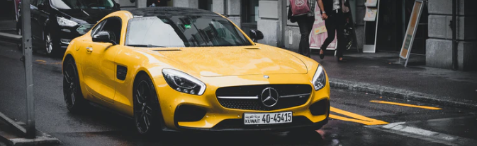

AMG
amg-GT media

Republic of Korea Mercedes in - Mercedes-Benz is a joint venture with ownership of the HA 51 cars and 49 - and the distribution through the Mercedes-Benz Korea, the official selection of the vendors sell it. And, Ssangyong
Motor in the automatic transmission supplies. 1985 , Malaysia Hap Seng Group based in Hong racing group established Hansung Automotive Korea was advanced to. It has established
itself as the largest dealer with a 49% stake in Mercedes Korea. After taking control of the distribution network in the core areas of the Seoul metropolitan area by both
importing and selling Mercedes , it secured vested interests as a dealer by making equity investments at the time of establishing the local sales subsidiary of the Benz he
adquarters . [3] Considering national income, there is criticism that Benz sold in Korea is on the expensive side of the world due to price control policies such as setting
high prices in advance and making dealer discounts almost impossible . Yujin Kim, former president of Yujin & Company, a former dealer, said, "The cause of all these problems
is Malaysia, which owns a 49% stake in Mercedes Korea and at the same time owns Hansung Motor, the largest dealer. Racing Hong Group, a Chinese conglomerate.” The Racing Hong
Group was caught in a similar controversy in China and was sanctioned by the German headquarters of Mercedes-Benz . [4] [5] [6] [7] September 19, 2014 ( On Friday ),
the'Automobile Center' Experience Center was opened in Kidzania Seoul , and in September 2019, it ranked third in domestic passenger car sales after Hyundai and Kia